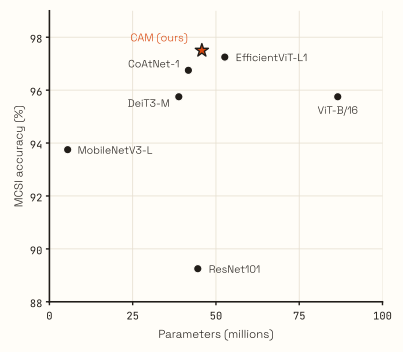
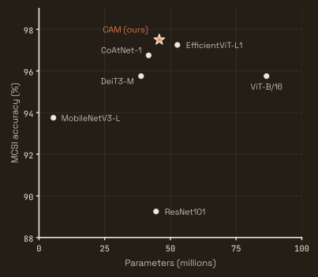
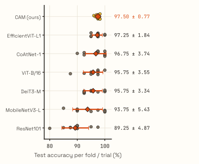
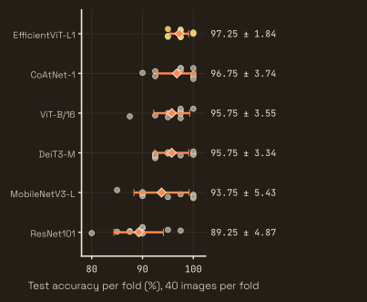

Spot the Pox
A cascaded attention module for Mpox lesion classification · research internship, CANDLE Research Lab, IIT Roorkee
TL;DR At the CANDLE Research Lab, IIT Roorkee, working with Prof. Sparsh Mittal, I built a cascaded attention module for an EfficientViT backbone to classify Mpox skin lesions. It reached 97.5% accuracy on MCSI, above all six baselines I compared against, with 13% fewer parameters than EfficientViT-L1. I later extended it on my own into a DAGM GCPR 2025 paper.
The problem
Mpox lesions look a lot like chickenpox, measles and acne, and lab confirmation is slow. The datasets are also tiny: MCSI has only 400 images across four classes. The goal of the internship was a classifier that is accurate on that little data and cheap enough to run on modest hardware, rather than just stacking a bigger backbone.
What I built
- A cascaded attention module that replaces the self-attention in blocks 1–6 of the fourth stage of EfficientViT-L1. Each head works on its own slice of the channels instead of every head looking at the whole feature map, which cuts the redundant computation in multi-head self-attention. The diagram below shows the data flow.
- An EfficientViT backbone with the module added, chosen because it is already built for low latency.
- Class-weighted focal loss (γ = 2), so the model can't do well just by getting the easy classes right.
- Careful evaluation: 10-fold cross-validation on MCSI with class-balanced folds, compared against six CNN and ViT baselines. AdamW (learning rate 9.6e-5, weight decay 0.01), an exponential LR schedule (γ = 0.95) and early stopping on validation accuracy (patience 9).
model.py (CascadedAttentionModule) in the CAM repo; utils.py swaps it into the backbone.Results
- 97.5% accuracy on MCSI (Acne, Normal, Chickenpox, Mpox), above all six baselines. The best baseline, EfficientViT-L1, scores 97.25%.
- 13% fewer parameters than EfficientViT-L1: 45.8M against 52.7M.
| Model | Accuracy %mean ± std, 10 folds | Precision | Recall | F1 | Params |
|---|---|---|---|---|---|
| EfficientViT-L1 + CAM (ours) | 97.5 | — | — | — | 45.8M |
| EfficientViT-L1 | 97.25 ± 1.84 | 0.9728 | 0.9744 | 0.9715 | 52.7M |
| CoAtNet-1 | 96.75 ± 3.74 | 0.9711 | 0.9672 | 0.9674 | 41.7M |
| DeiT3-M | 95.75 ± 3.34 | 0.9608 | 0.9577 | 0.9559 | 38.8M |
| ViT-B/16 | 95.75 ± 3.55 | 0.9578 | 0.9562 | 0.9542 | 86.6M |
| MobileNetV3-L | 93.75 ± 5.43 | 0.9434 | 0.9474 | 0.9392 | 5.5M |
| ResNet101 | 89.25 ± 4.87 | 0.8908 | 0.8919 | 0.8845 | 44.5M |
MCSI, 10-fold cross-validation. Baseline rows are the fold means in the per-model result CSVs of my later solo repo (MCSI/Scores and Hyperparams/*/results_*.csv), evaluated on the same folds. Precision, recall and F1 are macro averages. The 97.5% for the CAM row is the accuracy I reported at the end of the internship; the CAM repo has no saved per-fold or per-metric scores, so its other cells are left empty rather than filled in. Params are counted with timm's stock classifier head and random weights; the CAM row is EfficientViT-L1 with CascadedAttentionModule in stage-3 blocks 1–6, using model.py and utils.py from the CAM repo.




Accuracy.Then I extended it solo
After the internship I kept going on my own and added dilated convolutions inside each attention head. That extension became a single-author paper at DAGM GCPR 2025: A Cascaded Dilated Convolution Approach for Mpox Lesion Classification.
Thanks
To Prof. Sparsh Mittal and the CANDLE Research Lab at IIT Roorkee for hosting me and for the infrastructure that made this possible.